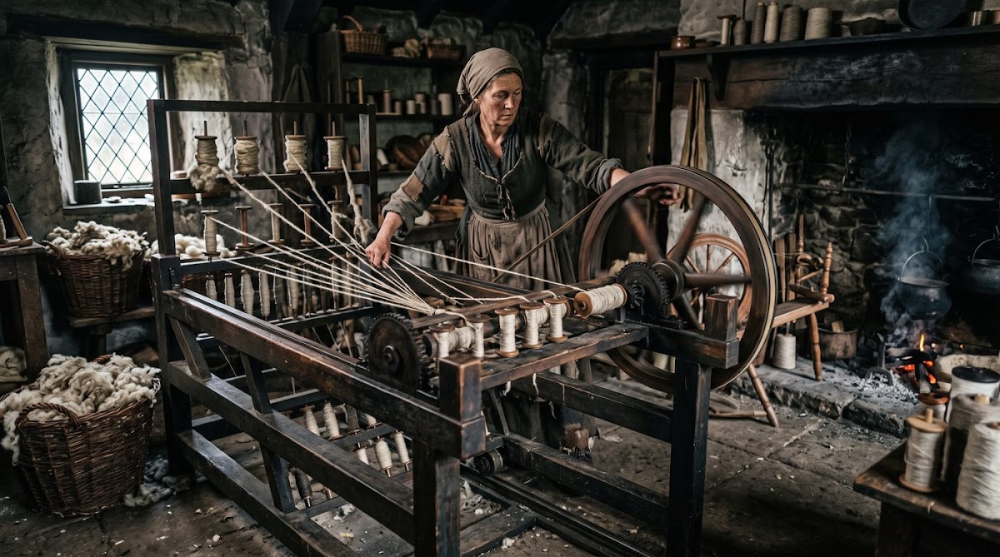
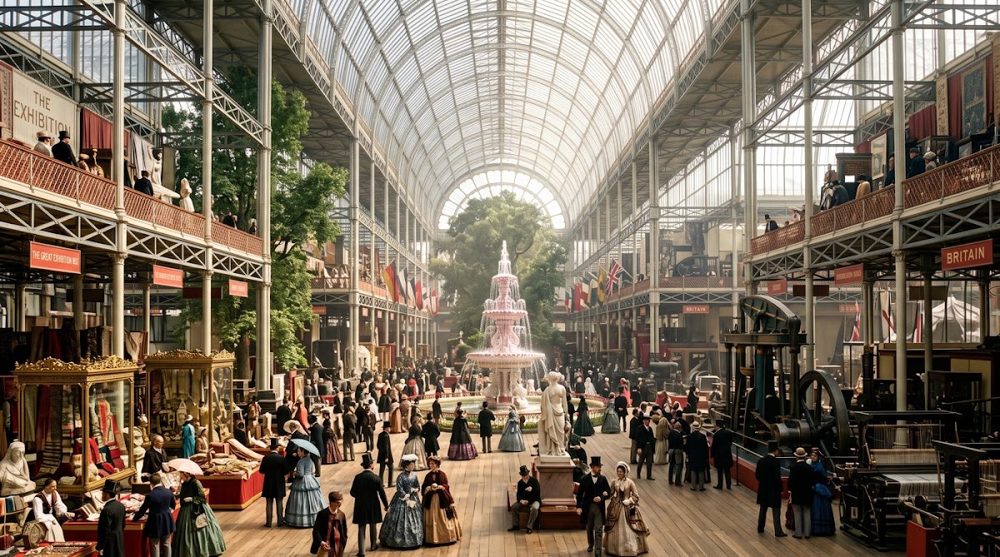
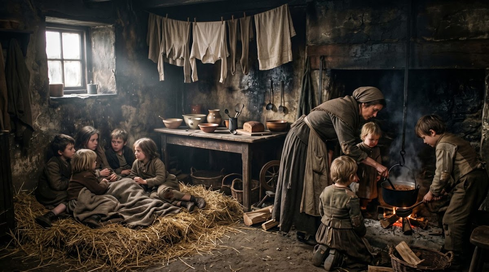

Hoe machines, fabrieken en stoom de wereld veranderden — en wat dat betekende voor gewone mensen. Vier hoofdstukken, honderd vragen, en alles om het te snappen.
Elk hoofdstuk heeft dia's, leerdoelen om af te vinken, begrippen, een tijdlijn, oorzaak en gevolg, quizzen en games.

01Agrarische en demografische revolutie, huisnijverheid, Spinning Jenny, waterframe en stoommachine.

02Waarom Nederland achterliep, en hoe schoenen, textiel, Unilever, Shell en Philips het verschil maakten.

03De sociale kwestie, het Kinderwetje, vakbonden, kiesrecht, de Eerste Wereldoorlog en de crisis.
Hongerwinter, Marshallhulp, wederopbouw, de jaren zestig, de oliecrisis en Nederland nu.
Drie getallen uit de lesstof die laten zien hoe hard het ging.
Scroll en zie de tijdlijn zich tekenen. Oefen hem daarna in het Oefenlab.
Rij langs bomen en pionnen, tank bij elk station bij met geschiedenisvragen en haal een nieuw record. Ook op de iPad, met je vinger.
Start de Racer → Maak een online toets Scroll-verhaal: van crisis naar welvaartEén kamer, geen riolering, soms geen ramen. Draai rond in een 3D-simulatie van een arbeiderswoning uit de negentiende eeuw en ontdek hoe gezinnen echt woonden.
Open de 3D-woning →Je voortgang wordt op dit apparaat bewaard. Vink je leerdoelen af en zie je cirkel vol lopen.